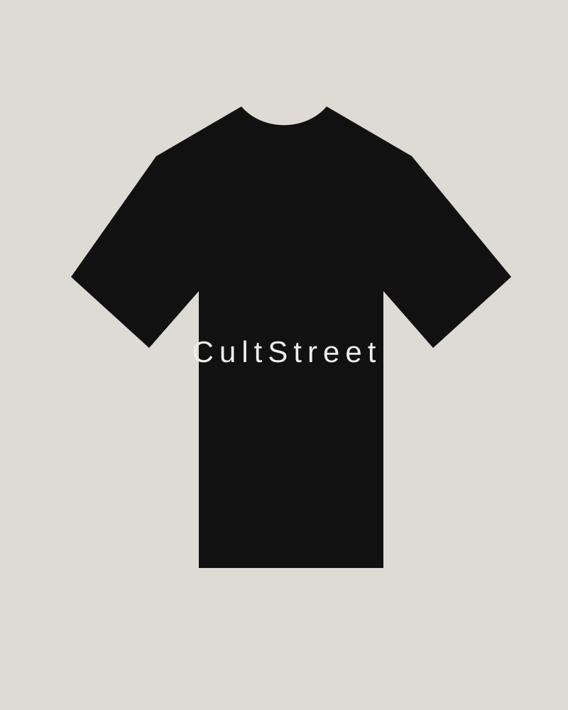
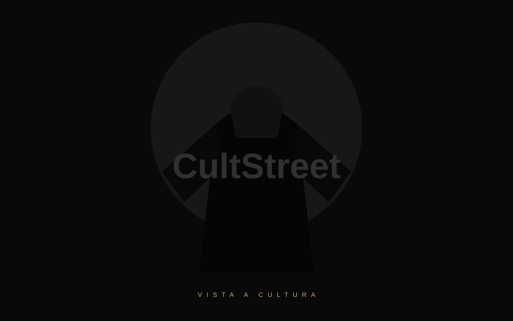
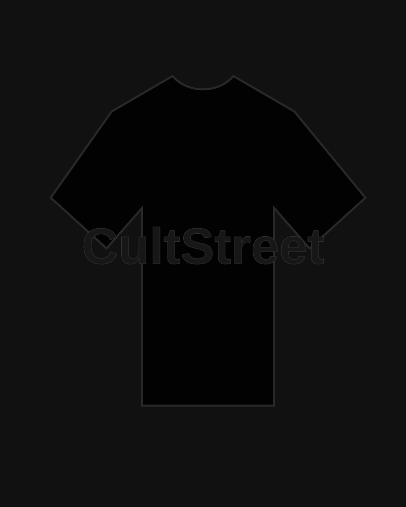

ESSENTIAL
CULTSTREET ESSENTIAL
O básico premium do dia a dia: algodão 24.1, modelagem oversized e visual minimalista.
Explorar linha
Uma grife brasileira para quem veste identidade, comunidade e propósito.

O básico premium do dia a dia: algodão 24.1, modelagem oversized e visual minimalista.
Explorar linha
Peças numeradas, heavyweight 280g e acabamento superior para drops limitados.
Ver drop limitadoA CultStreet nasce das ruas, das histórias e das pessoas. Cada peça é um capítulo de uma coleção limitada, criada para transformar roupa em símbolo de identidade.